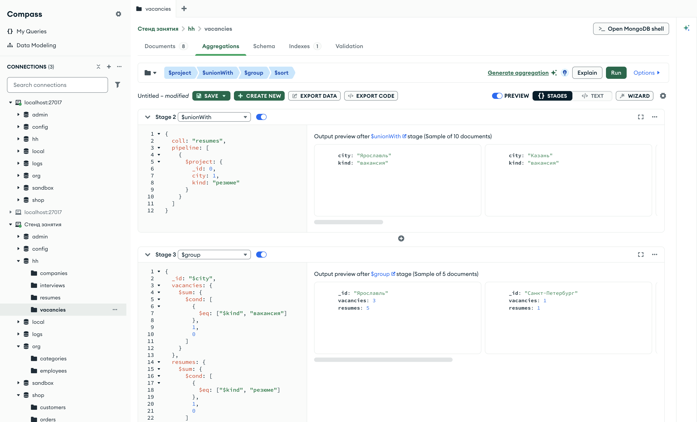

Справочник по MongoDB · модуль 6 · связи между коллекциями
6.4
$unionWith: две коллекции
в одном потоке
$lookup кладёт документы другой коллекции внутрь документа, $unionWith ставит их в поток рядом: после документов основной коллекции идут документы второй. В главе разобраны общий список вакансий и резюме, подсчёт по городам с отметкой источника, стадии до и после $unionWith, одна коллекция дважды и коллекция, которой нет в базе.
- Категория
- Агрегация
- Уровень
- Начальный
- Связанные темы
- $lookup (глава 6.1), $group и $cond (главы 4.4 и 4.2), $project (глава 4.2), $sort и $limit (глава 4.1)
- Зачем это знать
- Строить один отчёт по документам из нескольких коллекций: сравнивать спрос и предложение, складывать данные разных периодов, собирать крайние значения одним запросом
Как запускать примеры этой главы
mongodb-glava-6.4-python.zip, 60 КБmongodb-glava-6.4-ruby.zip, 60 КБmongodb-glava-6.4-go.zip, 65 КБmongodb-glava-6.4-cpp.zip, 63 КБ — все примеры главы готовыми программами, базы и стенд в Docker. В README.md — запуск в Docker, если Compass нет или он не подключается, и на установленном сервере с Compass, а также что должна напечатать каждая программа.lessons/ch6_4.py — пример вставляется в конец файлаlessons/ch6_4.rb — пример вставляется в конец файлаlessons/ch6_4.go — пример внутрь скобок в конце main, функции и типы — выше mainlessons/ch6_4.cpp — пример внутрь скобок в конце main, функции — выше maincd lessons, затем python ch6_4.pycd lessons, затем python3 ch6_4.py · в Docker: docker compose run --rm python lessons/ch6_4.pycd lessons, затем ruby ch6_4.rb · в Docker: docker compose run --rm ruby lessons/ch6_4.rbcd lessons, затем go run ch6_4.go · в Docker: docker compose run --rm go lessons/ch6_4.gocd lessons, затем g++ -std=c++17 ch6_4.cpp -o prog $(pkg-config --cflags --libs libmongocxx1) && ./prog · в Docker: docker compose run --rm cpp lessons/ch6_4.cpp§1Стадия $unionWith
Кадровое агентство ведёт две папки: вакансии работодателей и резюме соискателей. Чтобы увидеть всё, что есть по Москве, обе папки кладут на стол одной стопкой: сначала листы из первой папки, потом из второй. Листы не сшиваются, их просто становится больше.
Стадия $unionWith добавляет в поток документы другой коллекции той же базы. Документы основной коллекции проходят дальше без изменений, а после них идут документы второй коллекции. Короткая запись — имя коллекции: {"$unionWith": "resumes"}. Полная — документ с полями coll и pipeline: конвейер обрабатывает документы второй коллекции до того, как они войдут в поток.
У вакансии должность записана в поле title, у резюме — в поле position. Чтобы в общем списке поле называлось одинаково, конвейер второй коллекции переименовывает его стадией $project. Пример собирает московские вакансии и резюме.
pipeline = [
{"$match": {"city": "Москва"}},
{"$project": {"_id": 0, "title": 1, "city": 1}},
{"$unionWith": {
"coll": "resumes",
"pipeline": [
{"$match": {"city": "Москва"}},
{"$project": {"_id": 0, "title": "$position", "city": 1}},
],
}},
]
for doc in vacancies.aggregate(pipeline):
print(doc)
mongocxx::pipeline pipeline; pipeline.match(make_document(kvp("city", "Москва"))); pipeline.project(make_document(kvp("_id", 0), kvp("title", 1), kvp("city", 1))); pipeline.append_stage(make_document(kvp("$unionWith", make_document( kvp("coll", "resumes"), kvp("pipeline", make_array( make_document(kvp("$match", make_document(kvp("city", "Москва")))), make_document( kvp("$project", make_document(kvp("_id", 0), kvp("title", "$position"), kvp("city", 1)))))))))); for (auto&& doc : vacancies.aggregate(pipeline)) { std::cout << bsoncxx::to_json(doc, bsoncxx::ExtendedJsonMode::k_relaxed) << std::endl; }
pipeline := mongo.Pipeline{
{{Key: "$match", Value: bson.D{{Key: "city", Value: "Москва"}}}},
{{Key: "$project", Value: bson.D{
{Key: "_id", Value: 0},
{Key: "title", Value: 1},
{Key: "city", Value: 1}}}},
{{Key: "$unionWith", Value: bson.D{
{Key: "coll", Value: "resumes"},
{Key: "pipeline", Value: bson.A{
bson.D{{Key: "$match", Value: bson.D{{Key: "city", Value: "Москва"}}}},
bson.D{
{Key: "$project", Value: bson.D{
{Key: "_id", Value: 0},
{Key: "title", Value: "$position"},
{Key: "city", Value: 1}}}}}}}}},
}
cursor, _ := vacancies.Aggregate(ctx, pipeline)
for cursor.Next(ctx) {
var doc bson.D
cursor.Decode(&doc)
out, _ := bson.MarshalExtJSON(doc, false, false)
fmt.Println(string(out))
}
pipeline = [
{ "$match" => { "city" => "Москва" } },
{ "$project" => { "_id" => 0, "title" => 1, "city" => 1 } },
{ "$unionWith" => {
"coll" => "resumes",
"pipeline" => [
{ "$match" => { "city" => "Москва" } },
{ "$project" => { "_id" => 0, "title" => "$position", "city" => 1 } },
],
} },
]
vacancies.aggregate(pipeline).each { |doc| puts doc.inspect }
{'title': 'Администратор баз данных', 'city': 'Москва'}
{'title': 'Аналитик данных', 'city': 'Москва'}
{'title': 'Data-инженер', 'city': 'Москва'}
{'city': 'Москва', 'title': 'Аналитик данных'}
{ "title" : "Администратор баз данных", "city" : "Москва" }
{ "title" : "Аналитик данных", "city" : "Москва" }
{ "title" : "Data-инженер", "city" : "Москва" }
{ "city" : "Москва", "title" : "Аналитик данных" }
{"title":"Администратор баз данных","city":"Москва"}
{"title":"Аналитик данных","city":"Москва"}
{"title":"Data-инженер","city":"Москва"}
{"city":"Москва","title":"Аналитик данных"}
{"title"=>"Администратор баз данных", "city"=>"Москва"}
{"title"=>"Аналитик данных", "city"=>"Москва"}
{"title"=>"Data-инженер", "city"=>"Москва"}
{"city"=>"Москва", "title"=>"Аналитик данных"}
В потоке четыре документа: три московские вакансии, затем одно московское резюме — аналитик данных. У всех одинаковые поля title и city, но у резюме они идут в другом порядке: $project сначала выводит поля, взятые из документа как есть (city), а затем новые и переименованные (title). По документу нельзя понять, вакансия это или резюме; как это исправить — в §2.
| Стадия | Куда попадают документы второй коллекции | Документов в потоке |
|---|---|---|
| $lookup | в массив внутри каждого документа | столько же, сколько было |
| $unionWith | в поток после документов основной коллекции | сумма двух коллекций: 3 + 1 = 4 |
В SQL $lookup соответствует соединению (JOIN), $unionWith — объединению UNION ALL: строки двух выборок идут одна за другой, повторы не убираются.
§2Отметка источника и группировка
Чтобы различать документы двух коллекций, до объединения им добавляют поле с источником. Стадия $project ставит вакансиям kind: "вакансия", конвейер второй коллекции — резюме kind: "резюме". После объединения $group по городу считает документы каждого вида через $sum с $cond из главы 4.2: единица, если вид совпал, иначе ноль.
pipeline = [
{"$project": {"_id": 0, "city": 1, "kind": "вакансия"}},
{"$unionWith": {
"coll": "resumes",
"pipeline": [{"$project": {"_id": 0, "city": 1, "kind": "резюме"}}],
}},
{"$group": {
"_id": "$city",
"vacancies": {"$sum": {"$cond": [{"$eq": ["$kind", "вакансия"]}, 1, 0]}},
"resumes": {"$sum": {"$cond": [{"$eq": ["$kind", "резюме"]}, 1, 0]}},
}},
{"$sort": {"_id": 1}},
]
for doc in vacancies.aggregate(pipeline):
print(doc)
mongocxx::pipeline pipeline; pipeline.project(make_document(kvp("_id", 0), kvp("city", 1), kvp("kind", "вакансия"))); pipeline.append_stage(make_document(kvp("$unionWith", make_document( kvp("coll", "resumes"), kvp("pipeline", make_array( make_document( kvp("$project", make_document(kvp("_id", 0), kvp("city", 1), kvp("kind", "резюме")))))))))); pipeline.group(make_document( kvp("_id", "$city"), kvp("vacancies", make_document( kvp("$sum", make_document( kvp("$cond", make_array( make_document(kvp("$eq", make_array("$kind", "вакансия"))), 1, 0)))))), kvp("resumes", make_document( kvp("$sum", make_document( kvp("$cond", make_array(make_document(kvp("$eq", make_array("$kind", "резюме"))), 1, 0)))))))); pipeline.sort(make_document(kvp("_id", 1))); for (auto&& doc : vacancies.aggregate(pipeline)) { std::cout << bsoncxx::to_json(doc, bsoncxx::ExtendedJsonMode::k_relaxed) << std::endl; }
pipeline := mongo.Pipeline{
{{Key: "$project", Value: bson.D{
{Key: "_id", Value: 0},
{Key: "city", Value: 1},
{Key: "kind", Value: "вакансия"}}}},
{{Key: "$unionWith", Value: bson.D{
{Key: "coll", Value: "resumes"},
{Key: "pipeline", Value: bson.A{
bson.D{
{Key: "$project", Value: bson.D{
{Key: "_id", Value: 0},
{Key: "city", Value: 1},
{Key: "kind", Value: "резюме"}}}}}}}}},
{{Key: "$group", Value: bson.D{
{Key: "_id", Value: "$city"},
{Key: "vacancies", Value: bson.D{
{Key: "$sum", Value: bson.D{
{Key: "$cond", Value: bson.A{
bson.D{{Key: "$eq", Value: bson.A{"$kind", "вакансия"}}},
1,
0}}}}}},
{Key: "resumes", Value: bson.D{
{Key: "$sum", Value: bson.D{
{Key: "$cond", Value: bson.A{
bson.D{{Key: "$eq", Value: bson.A{"$kind", "резюме"}}},
1,
0}}}}}}}}},
{{Key: "$sort", Value: bson.D{{Key: "_id", Value: 1}}}},
}
cursor, _ := vacancies.Aggregate(ctx, pipeline)
for cursor.Next(ctx) {
var doc bson.D
cursor.Decode(&doc)
out, _ := bson.MarshalExtJSON(doc, false, false)
fmt.Println(string(out))
}
pipeline = [
{ "$project" => { "_id" => 0, "city" => 1, "kind" => "вакансия" } },
{ "$unionWith" => {
"coll" => "resumes",
"pipeline" => [{ "$project" => { "_id" => 0, "city" => 1, "kind" => "резюме" } }],
} },
{ "$group" => {
"_id" => "$city",
"vacancies" => { "$sum" => { "$cond" => [{ "$eq" => ["$kind", "вакансия"] }, 1, 0] } },
"resumes" => { "$sum" => { "$cond" => [{ "$eq" => ["$kind", "резюме"] }, 1, 0] } },
} },
{ "$sort" => { "_id" => 1 } },
]
vacancies.aggregate(pipeline).each { |doc| puts doc.inspect }
{'_id': 'Казань', 'vacancies': 1, 'resumes': 1}
{'_id': 'Москва', 'vacancies': 3, 'resumes': 1}
{'_id': 'Новосибирск', 'vacancies': 0, 'resumes': 1}
{'_id': 'Санкт-Петербург', 'vacancies': 1, 'resumes': 1}
{'_id': 'Ярославль', 'vacancies': 3, 'resumes': 5}
{ "_id" : "Казань", "vacancies" : 1, "resumes" : 1 }
{ "_id" : "Москва", "vacancies" : 3, "resumes" : 1 }
{ "_id" : "Новосибирск", "vacancies" : 0, "resumes" : 1 }
{ "_id" : "Санкт-Петербург", "vacancies" : 1, "resumes" : 1 }
{ "_id" : "Ярославль", "vacancies" : 3, "resumes" : 5 }
{"_id":"Казань","vacancies":1,"resumes":1}
{"_id":"Москва","vacancies":3,"resumes":1}
{"_id":"Новосибирск","vacancies":0,"resumes":1}
{"_id":"Санкт-Петербург","vacancies":1,"resumes":1}
{"_id":"Ярославль","vacancies":3,"resumes":5}
{"_id"=>"Казань", "vacancies"=>1, "resumes"=>1}
{"_id"=>"Москва", "vacancies"=>3, "resumes"=>1}
{"_id"=>"Новосибирск", "vacancies"=>0, "resumes"=>1}
{"_id"=>"Санкт-Петербург", "vacancies"=>1, "resumes"=>1}
{"_id"=>"Ярославль", "vacancies"=>3, "resumes"=>5}
В Москве три вакансии на одно резюме, в Ярославле — три вакансии на пять резюме. В Новосибирске есть резюме, но нет ни одной вакансии; в Казани и Санкт-Петербурге — по одной вакансии и одному резюме. Город попал в отчёт, если он есть хотя бы в одной из коллекций.
| Город | Вакансий | Резюме | На одно резюме |
|---|---|---|---|
| Казань | 1 | 1 | 1 |
| Москва | 3 | 1 | 3 |
| Новосибирск | 0 | 1 | 0 |
| Санкт-Петербург | 1 | 1 | 1 |
| Ярославль | 3 | 5 | 0,6 |
Последний столбец посчитан по выводу примера. Без поля kind группировка дала бы только общее число документов по городу.
§3Стадии до и после $unionWith
Стадии, которые стоят до $unionWith, обрабатывают только основную коллекцию. Стадии после — весь объединённый поток. Пример ставит один и тот же $match по Москве до объединения и после.
before = [
{"$match": {"city": "Москва"}},
{"$unionWith": "resumes"},
{"$count": "docs"},
]
after = [
{"$unionWith": "resumes"},
{"$match": {"city": "Москва"}},
{"$count": "docs"},
]
print("── $match до $unionWith")
for doc in vacancies.aggregate(before):
print(doc)
print("── $match после $unionWith")
for doc in vacancies.aggregate(after):
print(doc)
mongocxx::pipeline before; before.match(make_document(kvp("city", "Москва"))); before.append_stage(make_document(kvp("$unionWith", "resumes"))); before.count("docs"); mongocxx::pipeline after; after.append_stage(make_document(kvp("$unionWith", "resumes"))); after.match(make_document(kvp("city", "Москва"))); after.count("docs"); std::cout << "── $match до $unionWith" << std::endl; for (auto&& doc : vacancies.aggregate(before)) { std::cout << bsoncxx::to_json(doc, bsoncxx::ExtendedJsonMode::k_relaxed) << std::endl; } std::cout << "── $match после $unionWith" << std::endl; for (auto&& doc : vacancies.aggregate(after)) { std::cout << bsoncxx::to_json(doc, bsoncxx::ExtendedJsonMode::k_relaxed) << std::endl; }
before := mongo.Pipeline{
{{Key: "$match", Value: bson.D{{Key: "city", Value: "Москва"}}}},
{{Key: "$unionWith", Value: "resumes"}},
{{Key: "$count", Value: "docs"}},
}
after := mongo.Pipeline{
{{Key: "$unionWith", Value: "resumes"}},
{{Key: "$match", Value: bson.D{{Key: "city", Value: "Москва"}}}},
{{Key: "$count", Value: "docs"}},
}
fmt.Println("── $match до $unionWith")
cursor, _ := vacancies.Aggregate(ctx, before)
for cursor.Next(ctx) {
var doc bson.D
cursor.Decode(&doc)
out, _ := bson.MarshalExtJSON(doc, false, false)
fmt.Println(string(out))
}
fmt.Println("── $match после $unionWith")
cursor, _ = vacancies.Aggregate(ctx, after)
for cursor.Next(ctx) {
var doc bson.D
cursor.Decode(&doc)
out, _ := bson.MarshalExtJSON(doc, false, false)
fmt.Println(string(out))
}
before = [
{ "$match" => { "city" => "Москва" } },
{ "$unionWith" => "resumes" },
{ "$count" => "docs" },
]
after = [
{ "$unionWith" => "resumes" },
{ "$match" => { "city" => "Москва" } },
{ "$count" => "docs" },
]
puts "── $match до $unionWith"
vacancies.aggregate(before).each { |doc| puts doc.inspect }
puts "── $match после $unionWith"
vacancies.aggregate(after).each { |doc| puts doc.inspect }
── $match до $unionWith
{'docs': 12}
── $match после $unionWith
{'docs': 4}
── $match до $unionWith
{ "docs" : 12 }
── $match после $unionWith
{ "docs" : 4 }
── $match до $unionWith
{"docs":12}
── $match после $unionWith
{"docs":4}
── $match до $unionWith
{"docs"=>12}
── $match после $unionWith
{"docs"=>4}
$match до объединения дал 12 документов: три московские вакансии и все девять резюме — резюме условие не проверяли. После объединения документов 4: условие проверено у всех. Условие для второй коллекции записывают либо в её pipeline, как в §1, либо общей стадией после $unionWith.
§4Одна коллекция дважды
Вторая коллекция может совпадать с основной. Так одним запросом получают два разных среза одних данных. Пример выводит два самых дорогих и два самых дешёвых заказа: основной поток сортирует по убыванию суммы, конвейер $unionWith — по возрастанию. У двух самых дешёвых заказов суммы равны, поэтому вторым ключом сортировки стоит номер.
pipeline = [
{"$sort": {"total": -1, "number": 1}},
{"$limit": 2},
{"$project": {"_id": 0, "number": 1, "total": 1}},
{"$unionWith": {
"coll": "orders",
"pipeline": [
{"$sort": {"total": 1, "number": 1}},
{"$limit": 2},
{"$project": {"_id": 0, "number": 1, "total": 1}},
],
}},
]
for doc in orders.aggregate(pipeline):
print(doc)
mongocxx::pipeline pipeline; pipeline.sort(make_document(kvp("total", -1), kvp("number", 1))); pipeline.limit(2); pipeline.project(make_document(kvp("_id", 0), kvp("number", 1), kvp("total", 1))); pipeline.append_stage(make_document(kvp("$unionWith", make_document( kvp("coll", "orders"), kvp("pipeline", make_array( make_document(kvp("$sort", make_document(kvp("total", 1), kvp("number", 1)))), make_document(kvp("$limit", 2)), make_document( kvp("$project", make_document(kvp("_id", 0), kvp("number", 1), kvp("total", 1)))))))))); for (auto&& doc : orders.aggregate(pipeline)) { std::cout << bsoncxx::to_json(doc, bsoncxx::ExtendedJsonMode::k_relaxed) << std::endl; }
pipeline := mongo.Pipeline{
{{Key: "$sort", Value: bson.D{{Key: "total", Value: -1}, {Key: "number", Value: 1}}}},
{{Key: "$limit", Value: 2}},
{{Key: "$project", Value: bson.D{
{Key: "_id", Value: 0},
{Key: "number", Value: 1},
{Key: "total", Value: 1}}}},
{{Key: "$unionWith", Value: bson.D{
{Key: "coll", Value: "orders"},
{Key: "pipeline", Value: bson.A{
bson.D{
{Key: "$sort", Value: bson.D{{Key: "total", Value: 1}, {Key: "number", Value: 1}}}},
bson.D{{Key: "$limit", Value: 2}},
bson.D{
{Key: "$project", Value: bson.D{
{Key: "_id", Value: 0},
{Key: "number", Value: 1},
{Key: "total", Value: 1}}}}}}}}},
}
cursor, _ := orders.Aggregate(ctx, pipeline)
for cursor.Next(ctx) {
var doc bson.D
cursor.Decode(&doc)
out, _ := bson.MarshalExtJSON(doc, false, false)
fmt.Println(string(out))
}
pipeline = [
{ "$sort" => { "total" => -1, "number" => 1 } },
{ "$limit" => 2 },
{ "$project" => { "_id" => 0, "number" => 1, "total" => 1 } },
{ "$unionWith" => {
"coll" => "orders",
"pipeline" => [
{ "$sort" => { "total" => 1, "number" => 1 } },
{ "$limit" => 2 },
{ "$project" => { "_id" => 0, "number" => 1, "total" => 1 } },
],
} },
]
orders.aggregate(pipeline).each { |doc| puts doc.inspect }
{'number': '2026-0120', 'total': 457930}
{'number': '2026-0063', 'total': 413410}
{'number': '2026-0006', 'total': 2370}
{'number': '2026-0068', 'total': 2370}
{ "number" : "2026-0120", "total" : 457930 }
{ "number" : "2026-0063", "total" : 413410 }
{ "number" : "2026-0006", "total" : 2370 }
{ "number" : "2026-0068", "total" : 2370 }
{"number":"2026-0120","total":457930}
{"number":"2026-0063","total":413410}
{"number":"2026-0006","total":2370}
{"number":"2026-0068","total":2370}
{"number"=>"2026-0120", "total"=>457930}
{"number"=>"2026-0063", "total"=>413410}
{"number"=>"2026-0006", "total"=>2370}
{"number"=>"2026-0068", "total"=>2370}
Первые два документа — заказы 2026-0120 на 457 930 и 2026-0063 на 413 410. Следующие два — 2026-0006 и 2026-0068, оба на 2 370. Без второго ключа два последних заказа могли бы меняться местами от запуска к запуску.
§5Города из двух коллекций магазина
Город есть у покупателя (city) и у доставки заказа (delivery.city). Пример объединяет оба источника, приводит поле к имени city и считает по каждому городу покупателей и доставки.
pipeline = [
{"$project": {"_id": 0, "city": 1, "from": "customers"}},
{"$unionWith": {
"coll": "orders",
"pipeline": [
{"$project": {"_id": 0, "city": "$delivery.city", "from": "orders"}},
],
}},
{"$group": {
"_id": "$city",
"customers": {"$sum": {"$cond": [{"$eq": ["$from", "customers"]}, 1, 0]}},
"deliveries": {"$sum": {"$cond": [{"$eq": ["$from", "orders"]}, 1, 0]}},
}},
{"$sort": {"_id": 1}},
]
for doc in customers.aggregate(pipeline):
print(doc)
mongocxx::pipeline pipeline; pipeline.project(make_document(kvp("_id", 0), kvp("city", 1), kvp("from", "customers"))); pipeline.append_stage(make_document(kvp("$unionWith", make_document( kvp("coll", "orders"), kvp("pipeline", make_array( make_document( kvp("$project", make_document( kvp("_id", 0), kvp("city", "$delivery.city"), kvp("from", "orders")))))))))); pipeline.group(make_document( kvp("_id", "$city"), kvp("customers", make_document( kvp("$sum", make_document( kvp("$cond", make_array( make_document(kvp("$eq", make_array("$from", "customers"))), 1, 0)))))), kvp("deliveries", make_document( kvp("$sum", make_document( kvp("$cond", make_array(make_document(kvp("$eq", make_array("$from", "orders"))), 1, 0)))))))); pipeline.sort(make_document(kvp("_id", 1))); for (auto&& doc : customers.aggregate(pipeline)) { std::cout << bsoncxx::to_json(doc, bsoncxx::ExtendedJsonMode::k_relaxed) << std::endl; }
pipeline := mongo.Pipeline{
{{Key: "$project", Value: bson.D{
{Key: "_id", Value: 0},
{Key: "city", Value: 1},
{Key: "from", Value: "customers"}}}},
{{Key: "$unionWith", Value: bson.D{
{Key: "coll", Value: "orders"},
{Key: "pipeline", Value: bson.A{
bson.D{
{Key: "$project", Value: bson.D{
{Key: "_id", Value: 0},
{Key: "city", Value: "$delivery.city"},
{Key: "from", Value: "orders"}}}}}}}}},
{{Key: "$group", Value: bson.D{
{Key: "_id", Value: "$city"},
{Key: "customers", Value: bson.D{
{Key: "$sum", Value: bson.D{
{Key: "$cond", Value: bson.A{
bson.D{{Key: "$eq", Value: bson.A{"$from", "customers"}}},
1,
0}}}}}},
{Key: "deliveries", Value: bson.D{
{Key: "$sum", Value: bson.D{
{Key: "$cond", Value: bson.A{
bson.D{{Key: "$eq", Value: bson.A{"$from", "orders"}}},
1,
0}}}}}}}}},
{{Key: "$sort", Value: bson.D{{Key: "_id", Value: 1}}}},
}
cursor, _ := customers.Aggregate(ctx, pipeline)
for cursor.Next(ctx) {
var doc bson.D
cursor.Decode(&doc)
out, _ := bson.MarshalExtJSON(doc, false, false)
fmt.Println(string(out))
}
pipeline = [
{ "$project" => { "_id" => 0, "city" => 1, "from" => "customers" } },
{ "$unionWith" => {
"coll" => "orders",
"pipeline" => [
{ "$project" => { "_id" => 0, "city" => "$delivery.city", "from" => "orders" } },
],
} },
{ "$group" => {
"_id" => "$city",
"customers" => { "$sum" => { "$cond" => [{ "$eq" => ["$from", "customers"] }, 1, 0] } },
"deliveries" => { "$sum" => { "$cond" => [{ "$eq" => ["$from", "orders"] }, 1, 0] } },
} },
{ "$sort" => { "_id" => 1 } },
]
customers.aggregate(pipeline).each { |doc| puts doc.inspect }
{'_id': 'Екатеринбург', 'customers': 4, 'deliveries': 28}
{'_id': 'Москва', 'customers': 3, 'deliveries': 18}
{'_id': 'Новосибирск', 'customers': 6, 'deliveries': 35}
{'_id': 'Санкт-Петербург', 'customers': 3, 'deliveries': 18}
{'_id': 'Ярославль', 'customers': 4, 'deliveries': 21}
{ "_id" : "Екатеринбург", "customers" : 4, "deliveries" : 28 }
{ "_id" : "Москва", "customers" : 3, "deliveries" : 18 }
{ "_id" : "Новосибирск", "customers" : 6, "deliveries" : 35 }
{ "_id" : "Санкт-Петербург", "customers" : 3, "deliveries" : 18 }
{ "_id" : "Ярославль", "customers" : 4, "deliveries" : 21 }
{"_id":"Екатеринбург","customers":4,"deliveries":28}
{"_id":"Москва","customers":3,"deliveries":18}
{"_id":"Новосибирск","customers":6,"deliveries":35}
{"_id":"Санкт-Петербург","customers":3,"deliveries":18}
{"_id":"Ярославль","customers":4,"deliveries":21}
{"_id"=>"Екатеринбург", "customers"=>4, "deliveries"=>28}
{"_id"=>"Москва", "customers"=>3, "deliveries"=>18}
{"_id"=>"Новосибирск", "customers"=>6, "deliveries"=>35}
{"_id"=>"Санкт-Петербург", "customers"=>3, "deliveries"=>18}
{"_id"=>"Ярославль", "customers"=>4, "deliveries"=>21}
В Новосибирске 6 покупателей и 35 доставок, в Екатеринбурге — 4 и 28, в Ярославле — 4 и 21, в Москве и Санкт-Петербурге — по 3 покупателя и 18 доставок. Доставок в сумме 120, покупателей — 20: каждый документ обеих коллекций попал в поток один раз.
§6Коллекция, которой нет в базе
$unionWith, как и $lookup, работает в пределах одной базы. Коллекция employees есть в базе org, но не в shop. Пример считает покупателей без объединения и с объединением с employees.
only_customers = [
{"$count": "docs"},
]
with_employees = [
{"$unionWith": "employees"},
{"$count": "docs"},
]
print("── покупатели")
for doc in customers.aggregate(only_customers):
print(doc)
print("── покупатели и employees")
for doc in customers.aggregate(with_employees):
print(doc)
mongocxx::pipeline only_customers; only_customers.count("docs"); mongocxx::pipeline with_employees; with_employees.append_stage(make_document(kvp("$unionWith", "employees"))); with_employees.count("docs"); std::cout << "── покупатели" << std::endl; for (auto&& doc : customers.aggregate(only_customers)) { std::cout << bsoncxx::to_json(doc, bsoncxx::ExtendedJsonMode::k_relaxed) << std::endl; } std::cout << "── покупатели и employees" << std::endl; for (auto&& doc : customers.aggregate(with_employees)) { std::cout << bsoncxx::to_json(doc, bsoncxx::ExtendedJsonMode::k_relaxed) << std::endl; }
onlyCustomers := mongo.Pipeline{
{{Key: "$count", Value: "docs"}},
}
withEmployees := mongo.Pipeline{
{{Key: "$unionWith", Value: "employees"}},
{{Key: "$count", Value: "docs"}},
}
fmt.Println("── покупатели")
cursor, _ := customers.Aggregate(ctx, onlyCustomers)
for cursor.Next(ctx) {
var doc bson.D
cursor.Decode(&doc)
out, _ := bson.MarshalExtJSON(doc, false, false)
fmt.Println(string(out))
}
fmt.Println("── покупатели и employees")
cursor, _ = customers.Aggregate(ctx, withEmployees)
for cursor.Next(ctx) {
var doc bson.D
cursor.Decode(&doc)
out, _ := bson.MarshalExtJSON(doc, false, false)
fmt.Println(string(out))
}
only_customers = [
{ "$count" => "docs" },
]
with_employees = [
{ "$unionWith" => "employees" },
{ "$count" => "docs" },
]
puts "── покупатели"
customers.aggregate(only_customers).each { |doc| puts doc.inspect }
puts "── покупатели и employees"
customers.aggregate(with_employees).each { |doc| puts doc.inspect }
── покупатели
{'docs': 20}
── покупатели и employees
{'docs': 20}
── покупатели
{ "docs" : 20 }
── покупатели и employees
{ "docs" : 20 }
── покупатели
{"docs":20}
── покупатели и employees
{"docs":20}
── покупатели
{"docs"=>20}
── покупатели и employees
{"docs"=>20}
Оба счёта — 20. Ошибки нет: в базе shop коллекции employees нет, и сервер добавил в поток ноль документов. Такую ошибку видно, только если сверить число документов с ожидаемым.
§7$unionWith в Compass
На кадре — конвейер из §2 на вкладке Aggregations коллекции hh.vacancies: $project с отметкой «вакансия», $unionWith резюме с отметкой «резюме», $group и $sort.

Кадр начинается со стадии $unionWith: в редакторе — коллекция resumes и её конвейер с отметкой «резюме». Под стадией подпись Sample of 10 documents, а не 17: предпросмотр Compass показывает не больше 10 документов, и первыми идут вакансии с kind: "вакансия". Полный поток из 17 документов обрабатывает следующая стадия: под $group — пять городов с полями vacancies и resumes, например Ярославль — 3 и 5.
§8Частые ошибки
| Что написано | Что происходит | Как правильно |
|---|---|---|
{"$unionWith": "employees"} в базе shop | Ошибки нет, документов не прибавилось: коллекции employees в этой базе нет | $unionWith добавляет коллекции той же базы; проверять имя коллекции и счёт документов |
Стадия до $unionWith и ожидание, что она действует на обе коллекции | Стадии до $unionWith обрабатывают только основную коллекцию | Условие для второй коллекции — в её pipeline или общей стадией после $unionWith |
| Документы двух коллекций с разными именами полей | У части документов поля нет, и группировка по нему даёт ключ null | Привести поля к одним именам: {"$project": {"title": "$position"}} в pipeline |
Ожидание порядка без $sort | Документы второй коллекции идут после документов первой; общий порядок не задан | Сортировать после $unionWith |
| Что написано | Что происходит | Как правильно |
|---|---|---|
{"$unionWith": "employees"} в базе shop | Ошибки нет, документов не прибавилось: коллекции employees в этой базе нет | $unionWith добавляет коллекции той же базы; проверять имя коллекции и счёт документов |
Стадия до $unionWith и ожидание, что она действует на обе коллекции | Стадии до $unionWith обрабатывают только основную коллекцию | Условие для второй коллекции — в её pipeline или общей стадией после $unionWith |
| Документы двух коллекций с разными именами полей | У части документов поля нет, и группировка по нему даёт ключ null | Привести поля к одним именам: {"$project": {"title": "$position"}} в pipeline |
Ожидание порядка без $sort | Документы второй коллекции идут после документов первой; общий порядок не задан | Сортировать после $unionWith |
| Что написано | Что происходит | Как правильно |
|---|---|---|
{"$unionWith": "employees"} в базе shop | Ошибки нет, документов не прибавилось: коллекции employees в этой базе нет | $unionWith добавляет коллекции той же базы; проверять имя коллекции и счёт документов |
Стадия до $unionWith и ожидание, что она действует на обе коллекции | Стадии до $unionWith обрабатывают только основную коллекцию | Условие для второй коллекции — в её pipeline или общей стадией после $unionWith |
| Документы двух коллекций с разными именами полей | У части документов поля нет, и группировка по нему даёт ключ null | Привести поля к одним именам: {"$project": {"title": "$position"}} в pipeline |
Ожидание порядка без $sort | Документы второй коллекции идут после документов первой; общий порядок не задан | Сортировать после $unionWith |
| Что написано | Что происходит | Как правильно |
|---|---|---|
{"$unionWith": "employees"} в базе shop | Ошибки нет, документов не прибавилось: коллекции employees в этой базе нет | $unionWith добавляет коллекции той же базы; проверять имя коллекции и счёт документов |
Стадия до $unionWith и ожидание, что она действует на обе коллекции | Стадии до $unionWith обрабатывают только основную коллекцию | Условие для второй коллекции — в её pipeline или общей стадией после $unionWith |
| Документы двух коллекций с разными именами полей | У части документов поля нет, и группировка по нему даёт ключ null | Привести поля к одним именам: {"$project": {"title": "$position"}} в pipeline |
Ожидание порядка без $sort | Документы второй коллекции идут после документов первой; общий порядок не задан | Сортировать после $unionWith |
§9Проверьте себя
Сколько документов будет после $unionWith коллекции из 9 документов, если в основном потоке 8?
17: документы второй коллекции добавляются после документов основной.
Как различить после объединения документы двух коллекций?
Добавить каждому документу поле с источником до объединения: в основной коллекции — стадией $project, во второй — в её pipeline.
Почему $match до $unionWith не отбирает документы второй коллекции?
Стадии до $unionWith обрабатывают только основную коллекцию. Для второй условие ставят в её pipeline или после объединения.
Чем $unionWith отличается от $lookup?
$lookup кладёт найденные документы в массив внутри каждого документа, и число документов не меняется. $unionWith добавляет документы в поток.
Что произойдёт, если указать коллекцию из другой базы?
Ничего не добавится и ошибки не будет: сервер ищет коллекцию с этим именем в текущей базе.
§10Самостоятельная работа
Работа выполняется на языке, выбранном в шапке главы, в заготовке lessons/ch6_4. Данные — базы shop и hh, глава их не меняет.
- Три коллекцииПосчитать по городу компании, вакансии и резюме, объединив три коллекции базы
hh. - ЯрославльОбъединить ярославские вакансии и резюме и посчитать документы по должности, по убыванию числа и по названию.
- Самый дорогой и самый дешёвый товарОдним запросом вывести название и цену самого дорогого и самого дешёвого товара магазина.
Ответ для самопроверки
Три коллекции: Казань — 1, 1, 1; Москва — 3, 3, 1; Новосибирск — 0, 0, 1; Санкт-Петербург — 1, 1, 1; Ярославль — 3, 3, 5.
Ярославль: Junior Python-разработчик — 3; Backend-разработчик .NET, Backend-разработчик C#, Аналитик данных, Инженер сопровождения БД, Тестировщик — по 1.
Товары: Ноутбук Apple MacBook Air 13 — 114 990, Кабель USB-C 2 м — 790.
§11Шпаргалка
{"$unionWith": "resumes"}
{"$unionWith": {"coll": "resumes", "pipeline": [{"$project": {"_id": 0, "title": "$position"}}]}}
{"$project": {"_id": 0, "city": 1, "kind": "вакансия"}}
make_document(kvp("$unionWith", "resumes"))
make_document(kvp("$unionWith", make_document(kvp("coll", "resumes"), kvp("pipeline", make_array(make_document(kvp("$project", make_document(kvp("_id", 0), kvp("title", "$position")))))))))
make_document(kvp("$project", make_document(kvp("_id", 0), kvp("city", 1), kvp("kind", "вакансия"))))
bson.D{{Key: "$unionWith", Value: "resumes"}}
bson.D{{Key: "$unionWith", Value: bson.D{{Key: "coll", Value: "resumes"}, {Key: "pipeline", Value: bson.A{bson.D{{Key: "$project", Value: bson.D{{Key: "_id", Value: 0}, {Key: "title", Value: "$position"}}}}}}}}}
bson.D{{Key: "$project", Value: bson.D{{Key: "_id", Value: 0}, {Key: "city", Value: 1}, {Key: "kind", Value: "вакансия"}}}}
{ "$unionWith" => "resumes" }
{ "$unionWith" => { "coll" => "resumes", "pipeline" => [{ "$project" => { "_id" => 0, "title" => "$position" } }] } }
{ "$project" => { "_id" => 0, "city" => 1, "kind" => "вакансия" } }
Итог главы
$unionWith добавляет в поток документы другой коллекции той же базы после документов основной; повторы не убираются. Конвейер в pipeline обрабатывает документы второй коллекции до объединения: отбирает, переименовывает поля, ставит отметку источника.
Стадии до $unionWith действуют только на основную коллекцию, после — на весь поток. Коллекцию можно объединить с ней самой, чтобы получить два среза одним запросом.
Коллекция, которой нет в базе, ничего не добавляет и ошибки не даёт; результат сверяют по числу документов.